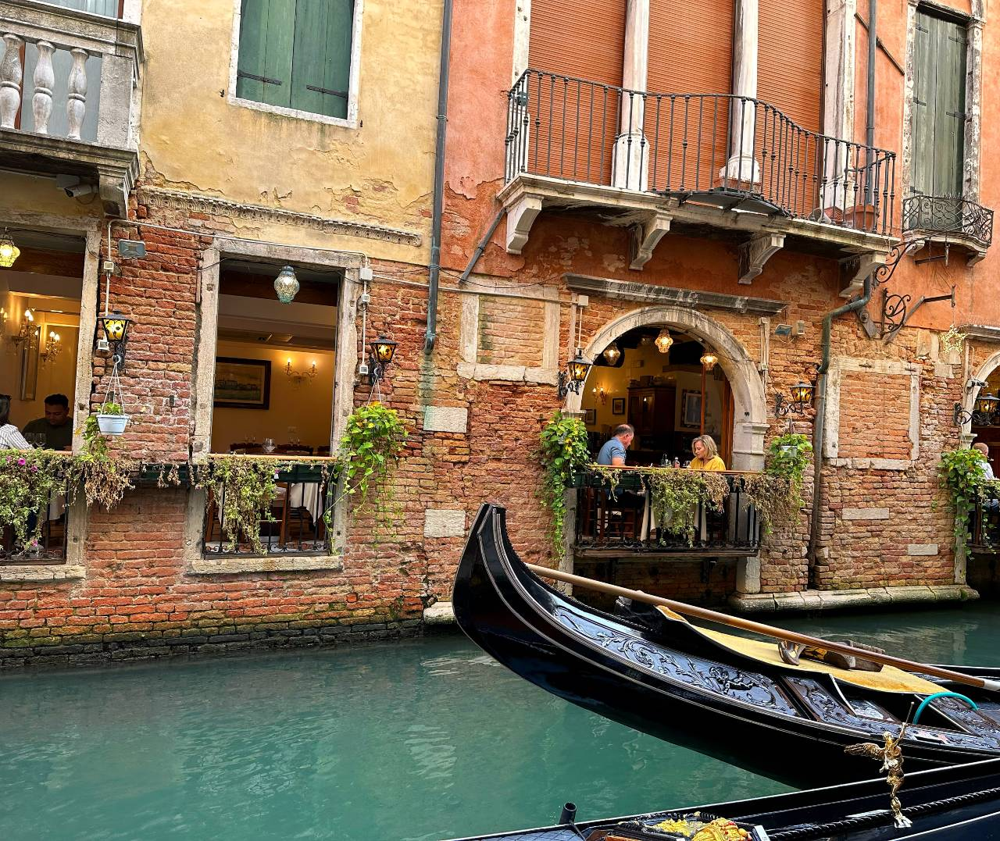

On my trip to Italy I visited Bologna, Verona and Venice - cities in the north
of Italy with rich culture and history.
Bologna is a historic city in northern Italy, known for
its rich culture, medieval architecture, and world-class cuisine. Home to the oldest
university in the Western world, founded in 1088, Bologna has
long been a center of learning and progressive thought.
The city’s heart is Piazza Maggiore, a grand medieval
square surrounded by significant buildings like the
Basilica di San Petronio, one of the largest
churches in the world. Nearby, the Fountain of Neptune, a 16th-century masterpiece by Giambologna,
stands as an iconic symbol of the city.
Towering over Bologna are the Two Towers (Le Due Torri),
Asinelli and Garisenda, built in the 12th century. Asinelli can still be climbed today, offering panoramic views over the city’s
terracotta rooftops and rolling hills beyond.
Bologna is also famous for its porticoes—over 60 kilometers of covered walkways that line its streets, now a UNESCO World Heritage Site. These arcades provide shade in summer, shelter in
rain, and a unique architectural rhythm to city life.
It’s a city where history, education, and gastronomy meet
in a vibrant, welcoming atmosphere.
Verona, in the heart of the Veneto region, is a city where history and romance intertwine beneath rose-hued skies. While immortalized as the setting of Shakespeare’s Romeo and Juliet, Verona’s true soul is found not on a balcony, but in stone—in the grand and ancient Arena di Verona.
Built in the 1st century AD, this Roman amphitheater once
echoed with the roars of gladiators and crowds. Remarkably
preserved, the Arena stands today as one of the oldest and
most majestic open-air venues in the world. Its elliptical
walls of white and pink marble dominate Piazza Bra, welcoming
thousands each year to experience world-class opera under the stars.
The historic center, a UNESCO World Heritage Site, is a
blend of Roman, Gothic, and Renaissance influences. At its heart lies Piazza delle Erbe, once the Roman forum, now a lively square lined with colorful frescoed buildings, market stalls, and cozy cafés. Just steps away, Piazza dei Signori exudes a quieter grandeur, flanked by elegant
palaces and watched over by a statue of Dante Alighieri.
But Verona doesn’t need fiction to enchant. Its true beauty lies in the harmony of past and present, in its graceful architecture, and in the quiet poetry of its streets.

Venice is a city like no other—a labyrinth of canals, bridges, and timeless beauty floating on a lagoon in northeastern Italy. Built on over 100 small islands and connected by more than 400 bridges, Venice is a masterpiece of human ingenuity and artistic grandeur.
At its heart lies Piazza San Marco, a dazzling square bordered by the ornate Basilica di San Marco, with its golden mosaics and Byzantine domes, and the soaring Campanile, offering sweeping views over the rooftops and waters below. The nearby Doge’s Palace, once the seat of Venetian power, still
impresses with its Gothic elegance and opulent interiors.
But Venice’s magic lives in its quiet corners too—in the narrow alleyways, hidden courtyards, and slow-moving gondolas that glide through silent canals. The Rialto Bridge, bustling with life, arches gracefully over the Grand Canal, while the less-crowded Accademia Bridge reveals the city’s softer side.
A place of both splendor and mystery, Venice is not just a destination—it’s an atmosphere, a dream, a fragile treasure suspended between sea and sky.